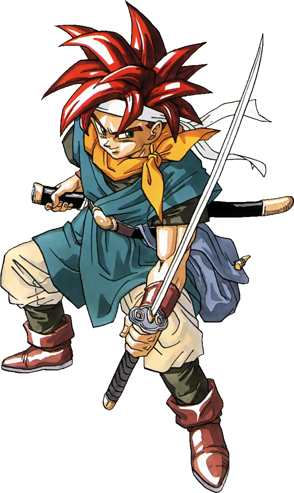
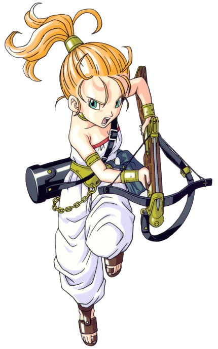
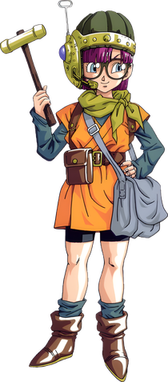
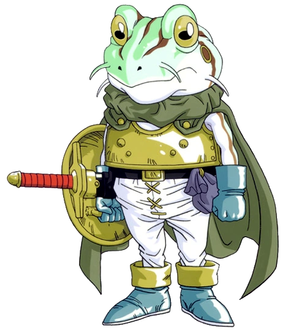

Chrono Trigger on vuonna 1995 julkaistu roolipeli, jota pidetään yhtenä pelihistorian suurimmista klassikoista. Peli vie pelaajan aikamatkalle esihistoriasta kaukaiseen tulevaisuuteen ja antaa mahdollisuuden vaikuttaa maailman kohtaloon omilla valinnoilla. Chrono Trigger erottuu muista peleistä lämpimällä tarinallaan, mieleenpainuvilla hahmoillaan ja innovatiivisella taistelujärjestelmällään, joka oli aikaansa edellä.
Chrono Triggerin vahvuus on sen aikamatkailuun perustuva rakenne, joka antaa pelaajalle vapauden tutkia eri aikakausia ja nähdä, miten tapahtumat vaikuttavat toisiinsa. Pelissä ei ole turhia satunnaistaisteluita, vaan viholliset näkyvät suoraan kartalla. Hahmojen yhteishyökkäykset, useat vaihtoehtoiset loput ja lämminhenkinen dialogi tekevät pelistä kokemuksen, joka tuntuu edelleen tuoreelta vuosikymmeniä julkaisun jälkeen.

Hän on hiljainen, rohkea ja miekkaa käyttävä nuori mies, joka elää vuodessa 1000 jKr. Crono ei puhu pelissä lainkaan, mikä tekee hänestä pelaajan “äänen” tarinassa pelaaja ikään kuin täyttää hänen roolinsa.

Marle on iloinen ja energinen nuori nainen, joka on oikeastaan kuningatar, mutta hän ei halua elää linnassa. Hän on taitava jousiampuja ja käyttää ristikkoa taistelussa. Marle on ystävällinen ja huolehtivainen, ja hänellä on vahva oikeudentaju.

Lucca on älykäs ja kekseliäs nuori nainen, joka on Cronon lapsuuden ystävä. Hän on taitava keksijä ja käyttää erilaisia teknisiä laitteita taistelussa, kuten rynnäkkökivääriä ja räjähteitä. Lucca on utelias ja rohkea, ja hänellä on vahva halu suojella ystäviään.

Frog,Alkujaan Glenn niminen mies, vuonna 600 jälkeen ajanlaskun alun, palveli lempeänä aseenkantajana parasta ystäväänsä, urhoollista ritari Cyrusta. Mutta kun Magus löi Cyruksen maahan ja langetti Glennin ylle kirouksen, joka muutti hänet sammakkomuotoiseksi olennoksi, tarttui Glenn Masamunen särkynyttä terää. Hän vannoi suojelevansa kuningatar Leeneä ja kostavansa kaatuneen toverinsa puolesta.